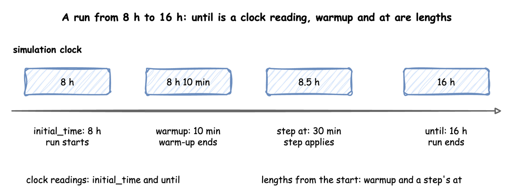

Run Length
This page shows how a run starts and ends, described in Time and Pacing: the warm-up, the initial time, the run length, stopping early, draining, stepping and running in segments.
What It Is
A study decides how long to watch the shop: a working day that ends at closing time, or a long run that leaves out its empty start. These settings decide when a run starts measuring, when it stops, and what happens to the orders still in the shop at the end.
How to Use It
Warm-up
warmup leaves the start of a run out of what it reports. It is one time per run, in simulation seconds or a duration. No sink receives a record or telemetry stamped before it, and the built-in statistics are reset once at that moment, so they describe the rest of the run. A run without it sends everything, which is what a data generator usually wants.
The warm-up is an argument of the sinks, because it is the sinks that leave records out: env.setup_egress(sinks, warmup=600). A run with no sink has no records to leave out. When the warm-up is set through the builder, the statistics are also reset at it.
The warm-up drops early records. go_live_at drops nothing, and only decides which sink gets each record. Trusting Results shows how to choose a warm-up length.
Initial Time
initial_time is the reading of the simulation clock when the run starts, 0 when left out, in seconds or as a duration. A model of a shift that starts at 8 in the morning can start its clock at 8 hours. Every event time, every record's sim_ts and until then read that clock. A record's timestamp is still logical_start_time plus sim_ts, to within 1 millisecond, because sim_ts is rounded and timestamp is truncated:
until is a clock reading too, so a run with initial_time: 8 h and until: 16 h lasts 8 hours. A scenario step's at and the warmup are different: they are lengths of time from the start of the run. Look at where each falls on the clock of that run:

With initial_time: 8 h, a step at 30 min applies at 8.5 hours, and a warm-up of 10 min ends at 8 hours 10 minutes.
The state the run starts with holds from the initial time, before the first arrival: a resource's current_cap, a container's level, a store's items and an arrival's attributes. The tests check each against plain SimPy (SimPy Compatibility).
Run Length
until is in simulation seconds. run() and a blueprint's run.until also take a duration such as "10 min", "8 hours" or "1 week". A month counts as 30 days and a year as 365.
desflow run FILE --until TIME overrides run.until for one run, without editing the file: desflow run shop.yaml --until "10 min" runs shop.yaml for 10 simulation minutes, whatever its run.until says.
env.run(until=604800) takes seconds only, as SimPy's run does.
The run stops at until before any event due at exactly that time, as SimPy's run(until=...) does: an order due at the horizon never arrives, and a task due to finish there stays unfinished. Statistics published at teardown read the model at until.
Events due at the same time run by priority, and then in the order they were scheduled (SimPy 4.1.2, core.py: schedule and run; URGENT and NORMAL in events.py). run(until=...) schedules its stop at urgent priority, so the stop comes before the ordinary events due at that time. How a scenario step or a change from an ingress connector ranks among them is in Live Parameters. Here two orders are packed at 5 seconds, and one is due at the horizon of 10 seconds:
The order of events due at the same time belongs to the environment, so it is the same in every form. The Low-level tab shows it with three processes on one environment.
The order of events due at the same time belongs to the environment, so it is the same in every form. The Low-level tab shows it with three processes on one environment.
Without until, SimPy runs until no events remain, and a run with an arrival never runs out of events. Neither does any run with a sink or an ingress connector, even when its own work is done. The environment's own processes repeat for as long as the run lasts. Give such a run an until, a stop or a drain, or stop it with Ctrl+C.
Stop Early
stop ends the run before until when something happens. It takes these forms:
{signal: name}ends the run at the next firing of a signal.{condition: ...}ends it at the first moment a condition holds. The condition is checked after every change of a level, a capacity, a registry value or a signal, and after every finished task.- In the builder,
run(stop=...)also takes a signal's name, or a function of the context that returns any SimPy event, such aslambda context: context.env.timeout(30). The function is called once the run is built. - In the low-level API, the same is SimPy's
env.run(until=event).
The run ends at whichever comes first, stop or until, and no other event at that moment runs after it. When both fall at the same moment, until ends the run, as SimPy's own until would.
run() and finish() return what SimPy's env.run(until=event) returns: the value of the event that ended the run:
| What ended the run | Value returned |
|---|---|
A stop on a signal |
the signal's value, such as the finished payload of the task that fired it |
A stop on a condition |
True |
A stop on a function's event |
the event's own value |
until, a drain, or until and the stop at the same moment |
None |
If the signal fails, the run still closes, and the sinks receive their records. Then run() raises the SignalFailed the signal failed with, as SimPy raises the exception of a failed event. desflow run reports it and exits with an error.
Drain
A fixed horizon cuts the run at until with orders still in the shop. A drain stops the arrivals at until and keeps running until every entity in the model has left. Set it with drain: true, or with drain: {limit: 1 h} to stop at the latest 1 hour after until. desflow run --drain sets it from the command line. The environment's own processes, such as the statistics timer, never hold a drain open. The end-conditions example closes the shop at 120 seconds, drains for at most a minute, and stops at once if the boxes run out:
| examples/builder/end_conditions_example.py:run | |
|---|---|
context.stop_arrivals() stops the arrival loops by hand, as a drain does at until.
The low-level API writes a drain as SimPy does: interrupt the source process, then run until all the admitted processes end.
With statistics at basic or above, flows.<arrival>.started, finished and in_system say how many entities entered, left and are still in the model. From minimal, tasks.<task>.in_progress says how many instances of each task are queued or being served. End Conditions compares a fixed horizon with a drain.
Step and Peek
start() builds everything run() builds and starts every process, with the clock still at its start. Two methods then move through the model one event at a time, as SimPy's env.step() and env.peek() do:
step()processes the next event of the model.peek()gives the time of the next event, or infinity when none is left.
Both count only the model's events, so a script steps the model as it would in SimPy. The events desflow adds do not count: the statistics timer, the flush timers, the lag and ingress monitors, and a resource's capacity watcher. peek() skips them, and step() runs those due before the model's next event in the same call. When only desflow's events are left, step() raises EmptySchedule and peek() gives infinity. finish() and run() still process them.
finish() runs a started run on to the end that run() would reach (until, the stop or the end of the drain), then closes it. run() is start() followed by finish(). After advance() or step(), finish() closes the run as follows:
- When the clock has reached
untilor passed it, and there is nostopordrain,finish()closes the run at once, as a run that ended atuntildoes. - When
step()brought the clock to exactlyuntil, the records hold the run's records, which end with the final statistics. They also hold the records of the events atuntilthatstep()processed, as in SimPy. A statistics reading due atuntilis not published again, and the close adds only the values that changed after it. - After steps past
until, the run closes where the steps stopped, with the final statistics at that time.
close() ends the run where it is. A context from from_yaml steps the same way:
SimulationContext.from_yaml("shop.yaml") returns a context with the same start(), peek(), step() and close(), as the Builder tab shows.
env.peek() and env.step() on a DynamicRealtimeEnvironment skip desflow's own events in the same way, and env.run(until=...) runs on from where the steps stopped.
It prints stopped before 30 at 20. Stepping does not stop at until: compare peek() with the time you want to stop at.
Run in Segments
advance(until) runs a started run up to a time and returns with the run still open, so a script can read the model, change it with context.env, or wait, then run the next segment. finish() runs on to the end, as it does after start():
A context from SimulationContext.from_yaml("shop.yaml") has the same start(), advance() and finish(), as the Builder tab shows.
Call env.run(until=...) again for each segment, as in SimPy. The records are the same as those of one run.
It prints paused at 40.0. A run in segments gives the same records as one run(), the telemetry and statistics included, because nothing is flushed at a segment boundary. The same holds for a script that calls env.run(until=...) again on a low-level environment, as in SimPy. A few rules:
untilis a reading of the simulation clock afternow, in seconds or as a duration such as"10 min". It can also be an event, as the third rule in this list describes. A time that is not afternowraisesValueError, as SimPy does.advance()beforestart()or afterclose()raisesRuntimeError.- The run stops at the earlier of
untiland its own end:start()'suntil, thestopor the end of a drain. A lateradvance()raisesRuntimeError, so callfinish()orclose().finish()returns the end's value:Noneforuntilor a drain, and the stop's value for a stop. For a failed stop, it raises the stop's exception again. untilmay be an event, such ascontext.signal("gate").wait(): the run stops where the event fires and returns its value, and the nextadvance()goes on, as SimPy'senv.run(until=event)does.- The event that ends a segment stays in the queue:
peek()gives the segment's time andstep()processes it. advance()does not move the wall-clock anchor. A paced run that waited between segments is behind when it goes on, so callenv.resume_pacing()first.
How It Works
The end of the model and the end of the run. The model ends when the clock stops: at until, at a stop, or when a drain empties the model. The run ends after that, at close(), which run() calls in a finally block. close() publishes the last statistics, still stamped at the time the model ended. It then flushes and stops the egress connectors, and then stops the ingress connectors. A sink may take a while to drain its queue, but no record it receives is later than the model's end.
Stability and Limits
The limits of this page are listed with those of the whole section, in Stability and Limits on the Time and Pacing page.
Example: End Conditions
The end-conditions example shows a drain after closing time, a stop when the boxes run out, and the counts of orders still in the shop. It needs no Docker service and ends on its own.
The tutorial page End Conditions teaches these features step by step.
Quick Start
desflow examples get downloads the example at the release you install, into a folder of its own. Pick uv or pip:
The whole file is examples/yaml/end_conditions.yaml.
Quick Start
desflow examples get downloads the example at the release you install, into a folder of its own. Pick uv or pip:
The whole file is examples/builder/end_conditions_example.py.
Quick Start
desflow examples get downloads the example at the release you install, into a folder of its own. Pick uv or pip:
The whole file is examples/low-level/end_conditions_example.py.